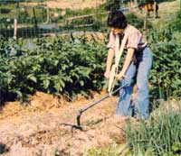
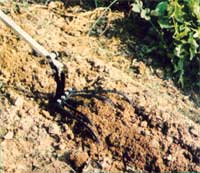
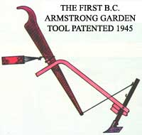

Small-plot growers can get their cultivating done more easily if they simply take a step...
STAFF PHOTOS
With full summer almost upon us, a lot of gardeners are likely to find themselves viewing the old cropping grounds with dwindling enthusiasm. The wonderful fantasies of last winter's seed selection are past, and the magical ceremony of planting is only a memory . . . but the backbreaking task of regular maintenance looms bigger and bigger by the day, and there are as yet precious few harvestable vegetables to reward that labor. In fact, it sometimes seems that that the gardener's every free June and July minute is spent hunched over a hoe or a wheel plow-eyes aching with sweat-in the effort just to keep up with invading weeds.
Well, Mr. B.C. Armstrong doesn't claim that he can free you from the task of weeding, but he does say that his invention, the "Straddler" garden cultivator, will help many people get that chore out of the way in less time and with less effort than would otherwise be possible. B.C. claims he's been aware of the inadequacies of the common means of muscle-powered cultivation since his childhood . . . when, presumably, he spent his midsummer afternoons and weekends wrestling such tools around the family garden. Those early experiences inspired him to search for a better cultivator design . . . and after looking over patents dating back to 19l4, he decided that a device which would allow the gardener to walk backwards could "make the best use of the weight and power of the body".
The inventor patented his first cultivator in 1945 (see the accompanying illustration). The design went through a number of refinements and revisions over the years, but it wasn't until after 1972-when B.C. retired-that he was able to devote the time necessary to develop his concept fully.
The result of that work is the somewhat odd-looking implement shown in the photos. It consists of a two-part shaft, a "push pad", and a handle-and-suspender assembly . . . all of which can be adjusted to suit the physique of the user.
Several of MOTHER's staffers put the Straddler through its paces during the summer of 1981, and all were quite pleased with the cultivator's design, ease of control, and light weight. Of course, it would be quite a task to actually plow a new bed with the Straddler (although it could certainly be done, particularly in good soil) . . . but when you're facing the charge of the crab grass or the attack of the amaranth, you might just find that it is, indeed, time to meet that challenge with a step backwards!
EDITOR'S NOTE: The basic Straddler is priced at $29 plus $5.00 shipping and handling. Optional attachments are available, too, so would-be buyers might want to write for more information-before ordering-to the Straddler Cultivator Co., Dept. TMEN, 535 Westmoreland, Jackson, Tennessee 38301. Please send $1.00 with your inquiry to cover postage and handling expenses.
|
 |
 |
 |